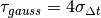
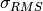
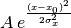

Module containing the fundamental beam class with methods to compute beam statistics
| Authors: | Danilo Quartullo, Helga Timko, ALexandre Lasheen |
|---|
Bases: object
Object containing the beam coordinates and beam properties such as mass, charge, synchronous energy, momentum, etc. The beam coordinate ‘dt’ is defined as the particle arrival time to the RF station w.r.t. the reference time that is the sum of turns. The beam coordiate ‘dE’ is defined as the particle energy offset w.r.t. the energy of the synchronous particle.
Import synchronous relativistic beta [1] (from GeneralParameters)
Import particle charge [Me] (from GeneralParameters)
Import synchronous total energy [MeV] (from GeneralParameters)
Import synchronous relativistic gamma [1] (from GeneralParameters)
Beam losses based on longitudinal cuts.
Beam losses based on separatrix.
Import particle mass [MeV] (from GeneralParameters)
Import synchronous momentum [MeV] (from GeneralParameters)
Calculation of the mean and standard deviation of beam coordinates, as well as beam emittance using different definitions.
Module to generate distributions
| Authors: | Danilo Quartullo, Helga Timko, Alexandre Lasheen, Juan Esteban Muller, Theodoros Argyropoulos |
|---|
Line density
Function to generate a beam by inputing the distribution density (by choosing the type of distribution and the emittance). The potential well is preprocessed to check for the min/max and center the frame around the separatrix. An error will be raised if there is not a full potential well (2 max and 1 min at least), or if there are several wells (more than 2 max and 1 min, this case will be treated in the future). A margin of 5% is applied in order to be able to catch the min/max of the potential well that might be on the edge of the frame. The slippage factor should be updated to take the higher orders. Outputs should be added in order for the user to check step by step if his bunch is going to be well generated. More detailed ‘step by step’ documentation should be implemented The user can input a custom distribution function by setting the parameter distribution_options[‘type’] = ‘user_input’ and passing the function in the parameter distribution_options[‘function’], with the following definition: distribution_density_function(action_array, dist_type, length, exponent = None). The user can also add an input table by setting the parameter distribution_options[‘type’] = ‘user_input_table’, distribution_options[‘user_table_action’] = array of action (in H or in J) and distribution_options[‘user_table_density’]
Function to generate a beam by inputing the line density. The distribution density is then reconstructed with the Abel transform and the particles randomly generated.
Function to locate the minima and maxima of the f(x) numerical function.
Function to cut the potential well in order to take only the separatrix (several cases according to the number of min/max).
Module to compute beam slicing
| Authors: | Danilo Quartullo, Alexandre Lasheen, Helga Timko |
|---|
Bases: object
Contains the beam profile and related quantities including beam spectrum, profile derivative, and profile fitting.
Import (reference) Beam
Import (reference) RFSectionParameters
The input is one of the two available methods for differentiating a function. The two outputs are the coordinate step and the discrete derivative of the Beam profile respectively.
Beam spectrum (arbitrary units)
Frequency array corresponding to the beam spectrum in [Hz]
Beam spectrum calculation, to be extended (normalized profile, different coordinates, etc.)
Center of the bins
Beam length with a Gaussian fit (needs fit_option to be ‘gaussian’ defined as )
Beam position at the peak of Gaussian fit
Method to convert a value from one input_unit_type to ‘ns’.
Left edge of the slicing; optional input in case of ‘const_space’ mode. A default value will be set if no value is given.
Right edge of the slicing; optional input in case of ‘const_space’ mode. A default value will be set if no value is given.
Edges positions of the slicing
Fit option allows to fit the Beam profile, with the options ‘None’ (default), ‘gaussian’.
assuming Gaussian line density.*
Gaussian fit of the profile, in order to get the bunch length and position. Returns fit values in units of ns.
Number of macro-particles per slice (~profile).
Optional input parameters, corresponding to the number of  of the Beam to slice (this will overwrite any input of cut_left and cut_right).
Number of slices
Gaussian parameters list obtained from fit
Method to set the self.cut_left and self.cut_right properties. This is done as a pre-processing if the mode is set to ‘const_space’, for ‘const_charge’ this is calculated each turn.
The frame is defined by :math:`nsigma_{RMS}` or manually by the user. If not, a default frame consisting of taking the whole bunch +5% of the maximum distance between two particles in the bunch will be taken in each side of the frame.
Constant space slicing with the built-in numpy histogram function, with a constant frame. This gives the same profile as the slice_constant_space method, but no compute statistics possibilities (the index of the particles is needed).
This method is faster than the classic slice_constant_space method for high number of particles (~1e6).
Sort the particles with respect to their position.
Track method in order to update the slicing along with the tracker. This will update the beam properties (bunch length obtained from the fit, etc.).
Track the slice frame (limits and slice position) as the mean of the bunch moves. Requires Beam statistics! Method to be refined!
Defined as:
